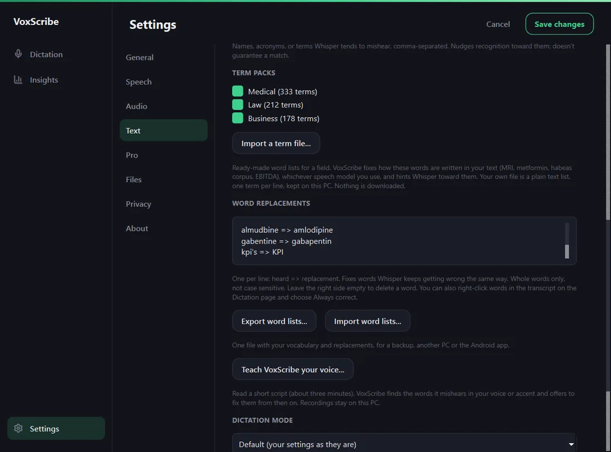
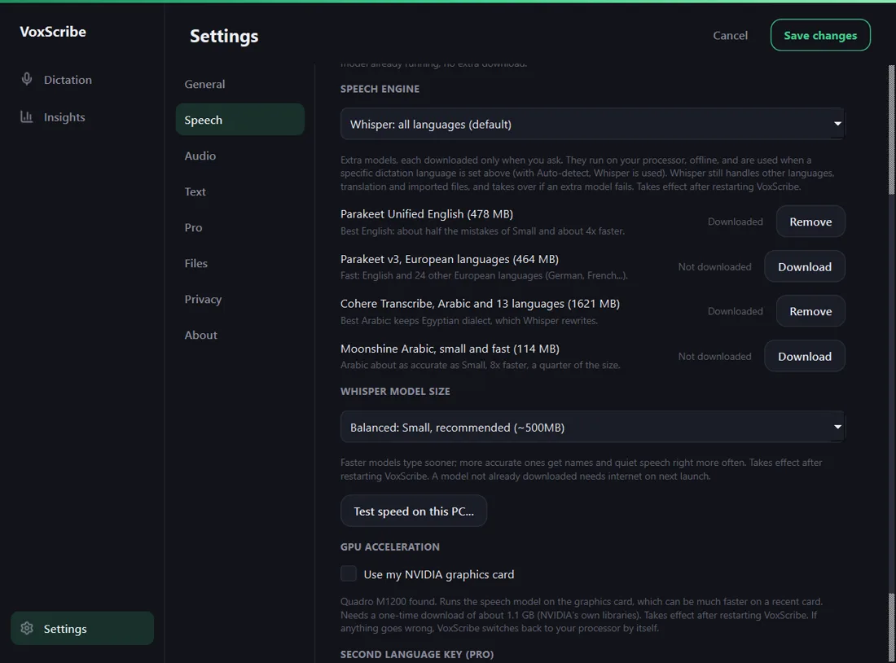
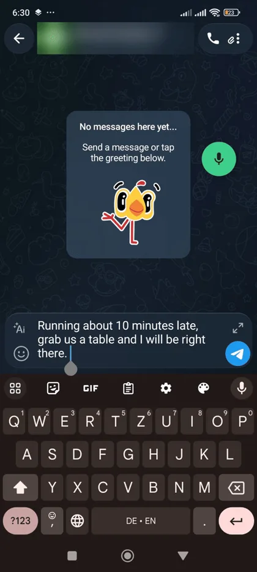

Offline, open source dictation for your PC and your phone. Talk.It types.
Offline, open source dictation for your PC and your phone. On Windows, hold F9, speak, release. On Android, tap the floating button. Your words are transcribed on your own device and typed into any app. No cloud upload, no subscription.
The rest of the time it's out of sight: a small floating pill shows Recording/Transcribing, then it's back in the tray.
See it
The real app, not a mockup.
Every screenshot on this page is VoxScribe running on a normal PC and phone.
01
Hold a key. Talk. It is typed where your cursor is.
Works in any app on Windows. It types with keystrokes, not paste, so your clipboard stays yours. Say "scratch that" to take back what you just typed.
Dictation
02
Medicine, law and business words, spelled right.
Term packs (333 medical, 212 law and 178 business terms) fix words like metformin and habeas corpus with any speech model. Add your own word replacements, or let VoxScribe learn from your voice.
Settings, Text

03
Pick the speech engine that fits your language.
Cohere Transcribe for Arabic that keeps your dialect, Parakeet for fast accurate English, Moonshine Arabic, and an optional NVIDIA GPU. Each model is downloaded only if you pick it.
Settings, Speech

04
The same offline dictation on your phone.
A floating button in any Android app. Tap, talk, and the words are typed in, transcribed on the phone with nothing uploaded. See the Android app.

Try it now, in this page
Hold a key, talk, then turn on airplane mode.
This runs a small Whisper model inside your browser. Load it once, then disconnect and keep talking. The counter below shows every network request made while it transcribes.
Hold it, or tap once to start and again to stop. On a computer you can also hold F9.
Nothing is downloaded until you click.
Any text box
Connection
Online
Requests while transcribing
-
Counted by your browser
Speed
-
On your hardware
Model
Not loaded
The apps use larger ones
Clicking Load downloads the speech engine from jsDelivr and a small English Whisper model (about 40 MB) from Hugging Face, once, with your browser's normal cache. Your voice is never sent anywhere: it is processed in this page and the audio is discarded afterward. This demo uses a small model and English only. The Windows and Android apps use larger models and about 28 languages.
What you say, what you get
Talk the way you think. It types the clean version.
Filler words and stutters are removed on your own PC by simple rules. No AI rewriting, and nothing is sent to any service.
What you said
Um, so I think we should move the meeting to three thirty tomorrow. You know, the client is running late, uh, and the the room is booked.
What VoxScribe types
So I think we should move the meeting to three thirty tomorrow. The client is running late, and the room is booked.
About 3.5 s to transcribe a 15 s clip*No internet needed after the first model downloadKeystrokes, not paste: your clipboard stays yours
*Small model, older laptop CPU, no GPU. Larger models are slower. The example is the real output of VoxScribe's cleanup step.
Features
Everything you need, nothing you don't
Built to feel invisible: it stays out of your way until you need it. Read the full tutorial for every feature, step by step.
Hold-to-talk hotkey
Hold F9 anywhere on your system: any app, any window. Release to transcribe, no toggling or mode switching.
Types directly, not clipboard
Text is typed straight into the focused field, so your clipboard contents are never touched or overwritten.
100% local transcription
Speech-to-text runs on your own PC, on the CPU or an NVIDIA graphics card. Your voice audio never leaves your computer.
Free filler-word cleanup
Strips "um", "uh", "like", "you know" and fixes spacing and capitalization. Rule-based, no paid AI API.
Spoken commands and undo
Say "period" or "new line" for symbols, "scratch that" to take back what you just typed, and "capitalize that" or "replace X with Y" to change it.
Audio and video to captions
Import a file or a whole folder and get an .srt next to each one: short two line cards, timed from the words and cut at pauses, and never overwriting an existing file.
Android app
The same offline dictation as a floating button in any Android app. See the Android app.
Meeting notes
Start meeting records your microphone and what the PC plays, removes the echo, and writes a markdown note with action items, decisions and questions into a folder you choose, such as your Obsidian vault.
Term packs for medicine, law and business
Words like MRI, metformin, habeas corpus and EBITDA are written correctly with any speech model. Import your own list as a plain text file.
Teach VoxScribe your voice
Read a short script and VoxScribe finds the words it mishears in your voice or accent, then fixes them from then on. Recordings stay on your PC.
Cohere Transcribe for Arabic that keeps your dialect, Parakeet for fast, accurate English, Moonshine Arabic, and optional NVIDIA GPU. Each is downloaded only if you pick it.
Notes inbox key
Hold a key and speak, and the words are saved as a timestamped line in a markdown file instead of being typed.
Read it back, and unsure words
Hear each dictation in Windows' own voice, and see the words the model was unsure about underlined. Both are off until you turn them on.
Try harder, modes and snippets
Press F8 to rerun a recording through a bigger model, switch between Chat, Email, Code and Notes, and expand short phrases into full text with Pro.
simple by design
Three steps. Zero setup.
Nothing to configure first.
Step_1.exex
F9
Hold F9
Anywhere on Windows: a text editor, a browser, a chat app.
Step_2.exex
Speak
Talk naturally. VoxScribe captures your mic in the background.
Step_3.exex
Move the meeting to three thirty.
Release
Cleaned-up text is typed directly where your cursor is.
VoxScribe starts hidden in the system tray and stays there. No window to manage, no icon in your taskbar until you ask for one.
Idle, waiting for F9
Recording your voice
Typed straight into the app
Compare
Free vs. cloud dictation tools
Most dictation apps run your voice through a cloud API and charge a subscription. VoxScribe runs everything locally, for free.
VoxScribe
Typical cloud dictation tools
Cost
Free
Monthly subscription
Where transcription runs
Locally on your PC
Uploaded to a cloud server
Works offline (after setup)
Yes
No, requires internet every time
Open source
Yes (MIT)
No
Reviews
What people are saying
Real feedback from people who've actually tried it.
“
I’ve used [other dictation tools]… I’m proud to say I’ve tried yours and I do like it.
Nurse· 10+ years dictating
Shared in a Reddit comment
“
I thought it was the best of the ones I had tried. I liked the single purchase model and as a person who has had a stroke many years ago it was very useful.
VoxScribe Pro customer
Shared by email
VoxScribe Pro
Unlock Snippets & higher accuracy
Snippets (say a trigger phrase, get an expansion typed, with live {date}/{time}/{clipboard} variables), Medium and Large Whisper models for higher accuracy (also for Try harder), dictation modes that switch by app, and whole-folder caption import. One key covers two PCs and two phones. One-time purchase, offline license key, no account, no subscription.
One-time payment via Gumroad · 7-day refund · key delivered by email
Get one email when a big update ships
Optional. Add your email if you would like a short note about major releases, or want to tell me what is missing. No account, and VoxScribe works the same without it.
Used only for these emails, never shared or sold. You can be removed at any time: type your address and press remove me. See the privacy policy.
On first launch, VoxScribe downloads the speech model (a few hundred MB). This needs internet once; after that, transcription is fully offline
Hold F9 anywhere and start talking
Prefer a package manager? With winget: winget install ahmedhmam1994.VoxScribe. Or with Scoop: scoop bucket add voxscribe https://github.com/ahmedhmam1994/scoop-voxscribe then scoop install voxscribe
Windows SmartScreen note: VoxScribe is a new, unsigned app, and because it hooks the keyboard (for the hotkey and to type text), Windows may show a "Windows protected your PC" warning on first run. Click More info → Run anyway to proceed. This is expected for unsigned indie software, not a sign of a problem. The full source is public on GitHub if you want to verify it yourself. How to check the file, skip the warning, and what the installer changes.
FAQ
Frequently asked questions
Is it really free?
The core app is, forever, under the MIT license: no subscription, no account required. There's an optional one-time $14 Pro upgrade for snippets and larger Whisper models, but dictation itself is fully free.
Does it need an internet connection?
Only once, to download the speech-to-text model on first launch. After that, transcription works fully offline. Your voice audio is never uploaded anywhere.
Which languages can I dictate in?
Windows dictates in about 28 languages plus auto-detect, including Spanish, French, German, Italian, Portuguese, Arabic, Hindi, Chinese, Japanese and Korean. Android currently offers English, Spanish, French, German, Italian, Turkish and Arabic, plus auto-detect. Smaller models make more mistakes outside English, so on Windows try the Small model or larger for other languages.
What platforms does it support?
Windows 10 and 11, and Android 8 or newer. On Android a small floating button works in any app; download the APK from the releases page, since it is not on the Play Store yet.
Does it work with any microphone?
Yes. VoxScribe auto-detects your default input device (including Bluetooth headsets) and adapts to its native sample rate.
Why does Windows show a security warning when I install it?
VoxScribe is free and not yet code-signed, so Windows asks you to confirm once: click More info, then Run anyway. Installing with winget or Scoop usually skips it. The install warning guide shows how to check the file first and exactly what the installer changes.
How accurate is the transcription?
It uses faster-whisper's "small" model, which offers a solid balance of speed and accuracy on CPU for everyday dictation.
I lost my Pro license key. Can I get it back?
Yes. Open a GitHub issue with the name or email you used to buy it, and I'll look it up and send it back to you.